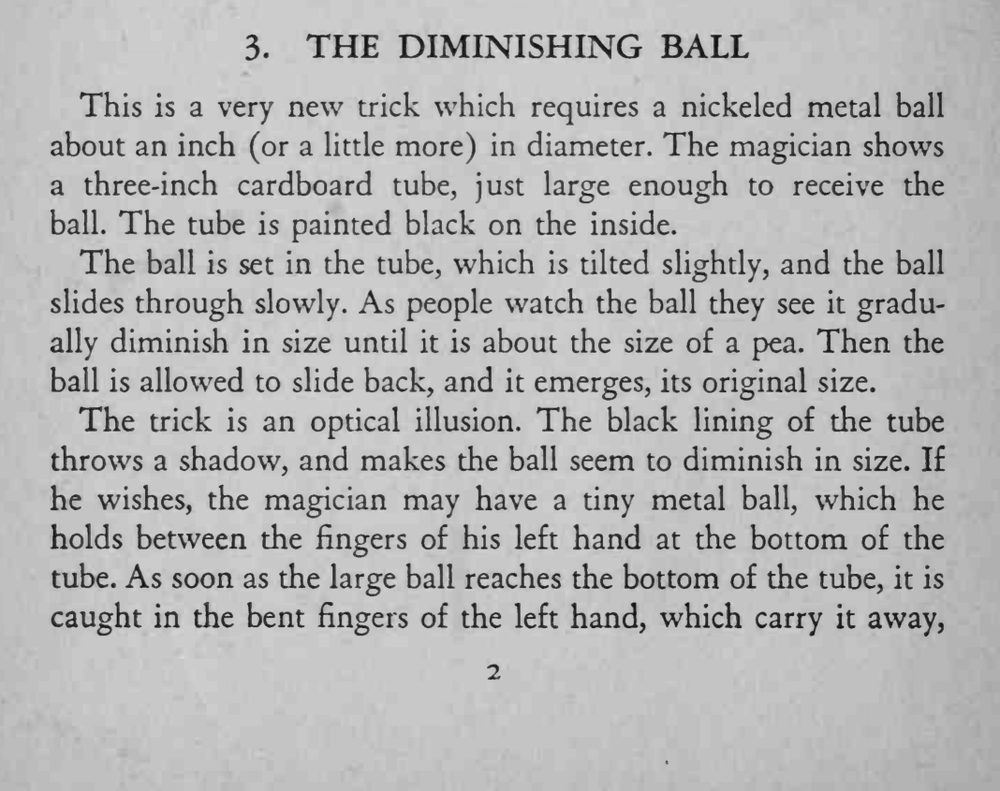
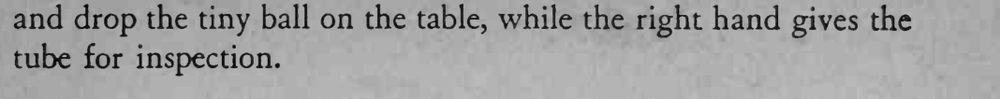

BALL TRICKS / 球类魔术 · 第 3 个魔术 · 原书 p.22-23
缩小的球
THE DIMINISHING BALL
| 道具 | 镀镍金属球 1 颗、内壁涂黑的三英寸纸筒 1 个、小金属球 1 颗（进阶） |
| 难度 | 入门 |
| 时长 | 2 分钟 |
| 场合 | 近景 / 桌面 |
| 需托 | 否 |
效果
一颗一英寸以上的镀镍金属球放进纸筒缓缓滑下，观众眼看着它越缩越小，最后小如豌豆；把筒一倾，它又恢复原样滚出来。
方法
- 道具：直径一英寸左右（或稍大）的镀镍金属球；一支三英寸长的硬纸筒，筒口刚好容球通过，筒内壁涂成黑色。
- 球放进筒里，把筒略微倾斜，球就慢慢往下滑。筒壁的黑漆投下阴影，观众的视觉会以为球在一点点缩小，直到只有豌豆大小。
- 再把筒倒过来让球滑回，球「恢复」原来的大小，效果结束。
- 进阶做法：左手在筒底暗藏一颗小金属球。大球滑到底的瞬间被弯曲的左手手指接住带走，左手把小球丢在桌上，右手把纸筒递给观众检查。
提示
纯粹的光学错觉：球的大小从未改变，变的是筒内黑漆造成的阴影。


This is a very new trick which requires a nickled metal ball about an inch (or a little more) in diameter. The magician shows a three-inch cardboard tube, just large enough to receive the ball. The tube is painted black on the inside.
The ball is set in the tube, which is tilted slightly, and the ball slides through slowly. As people watch the ball they see it gradually diminish in size until it is about the size of a pea. Then the ball is allowed to slide back, and it emerges, its original size.
The trick is an optical illusion. The black lining of the tube throws a shadow, and makes the ball seem to diminish in size. If he wishes, the magician may have a tiny metal ball, which he holds between the fingers of his left hand at the bottom of the tube. As soon as the large ball reaches the bottom of the tube, it is caught in the bent fingers of the left hand, which carry it away, and drop the tiny ball on the table, while the right hand gives the tube for inspection.
BT-003 · 400 Tricks You Can Do · 中文重排版